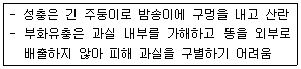

식물보호기사 (2012-03-04 기출문제)
1과목: 식물병리학
1. 중간 기주인 향나무류를 제거하면 병 피해를 경감시킬 수 있는 병은?
- 복숭아 검은 무늬병
- 사과 붉은 별무늬병
- 균핵병
- 사과 탄저병
(정답률: 92%)

2. 식물 바이러스 입자의 외피를 구성하는 성분은?
- 지질단백질(Lipoprotein)
- 셀룰로오스(Cellulose)
- 키틴(Chitin)
- 단백질(Protein)
(정답률: 68%)
3. 세균의 그람염색반응을 결정하는 것은?
- 편모의 유무
- 편모를 두께
- 세포벽의 물리적 구조
- 세포벽의 화학적 구조
(정답률: 73%)
4. 표징이 나타나지 않는 병은?
- 토마토 잎곰팡이병
- 오동나무 빗자루병
- 보리 겉깜부기병
- 감귤 그을음 병
(정답률: 73%)
5. 다수계(통일계) 벼 품종이 도열병에 이병화된 원인으로 가장 관계가 깊은 것은?
- 변이균 발생
- 토양의 산성화
- 침수와 태풍
- 매개충 대발생
(정답률: 63%)
6. 사과 탄저병의 방제에 직접적인 효과를 볼 수 있는 것으로 가장 적합한 방법은?
- 포장위생
- 합리적인 비배관리
- 밀식
- 봉지씌우기
(정답률: 64%)
7. 스트렙토마이신으로 방제할 수 없는 병은?
- 감귤 더뎅이병
- 담배 들불병
- 뽕나무 오갈병
- 배추 세균성무름병
(정답률: 68%)
8. 병징(symptom)에 해당하는 것은?
- 흰가루병 감염 식물체의 흰가루
- 세균성 혹병 감염에 의한 뿌리혹
- 균핵병균 감염 식물체의 균핵(sclerotium)
- 녹병균 감염 식물체의 녹포자기
(정답률: 61%)
9. 제2차 전염원으로 중요한 역할을 하는 식물병원 진균의 포자 이름은?
- 난포자
- 분생포자
- 자낭포자
- 담자포자
(정답률: 63%)
10. ds-RNA의 존재에 따른 저병원성 균주를 이용한 방제 가능성을 보이고 있는 병은?
- 밤나무 줄기마름병
- 토마토 역병
- 소나무 가지마름병
- 오이 모자이크병
(정답률: 52%)
11. 애멸구가 매개하는 병으로서 우리나라 일반계 벼품종에서 피해가 큰 병은?
- 줄무늬잎마름병
- 도열병
- 흰빛잎마름병
- 잎집무늬마름병
(정답률: 80%)
12. 세균이 식물의 병을 일으킨다는 것을 처음으로 증명한 사람은?
- 다윈(Darwin)
- 멘델(Mendel)
- 버릴(Burrill)
- 코흐(Coch)
(정답률: 77%)
13. 내병성 품종에 대한 설명으로 가장 적합한 것은?
- 어떤 경우에도 전혀 병에 걸리지 않는 품종을 말한다.
- 병에 대하여 예민하게 반응하는 품종을 말한다.
- 특수한 병에 대해서만 저항성을 나타내는 품종을 말한다.
- 같은 병에 걸려도 그 피해가 적게 나타나는 품종을 말한다.
(정답률: 79%)
14. 식물 바이러스병의 전염 방법이 아닌 것은?
- 토양 전염
- 종자 전염
- 화분 전염
- 수매 전염
(정답률: 43%)
15. 혈청학적 진단에 대한 설명으로 틀린 것은?
- 슬라이드법은 슬라이드상의 항혈청과 세균감염 식물의 즙액을 혼입하여 응집괴의 형성 유무로 진단하는 것이다.
- 한천겔확산법은 한번에 한 가지 항원(병원균)에 대하여만 검사가 가능하다.
- 효소결합항체법은 다클론항체법과 단클론항체법이 있다.
- 다클론항체법은 단클론항체법과 비교할 때 특이성과 신뢰도가 낮다.
(정답률: 64%)
16. 바이러스의 비영속적 전염과 관계 깊은 것은?
- 구침형 바이러스
- 증식형 바이러스
- 순환형 바이러스
- 경란전염형 바이러스
(정답률: 59%)
17. 배추 무름병의 병원균은?
- 점균
- 진균
- 세균
- 바이러스
(정답률: 72%)
18. 다음 중 영양번식성 작물의 바이러스병 전파에 미치는 영향 중 가장 중요한 것은?
- 유묘를 기르는 상토
- 작업도구
- 재배시설
- 병든 구근
(정답률: 68%)
19. 포플러가 조기 낙엽된 잎 뒷면에 노란가루가 무더기로 보이는 것은 포플러 잎녹병균의 무슨 포자인가?
- 하포자
- 분생포자
- 녹포자
- 담자포자(소생자)
(정답률: 43%)
20. 균핵(sclerotium) 이란?
- 균류의 자실체의 일종
- 균류의 생식세포의 일종
- 균류의 기주 침입 균사조직의 일종
- 균류의 내구성 균사조직의 일종
(정답률: 39%)
2과목: 농림해충학
21. 곤충 체벽의 기능이 아닌 것은?
- 수분증발 억제
- 근육의 부착점
- 혈구세포 분화
- 제1차 면역기관
(정답률: 73%)
22. 페로몬을 이용한 해충방제에 대한 설명으로 틀린것은?
- 집합페로몬의 경우 집단 유살을 꾀할 수 있다.
- 교미교란을 통해 산란수를 감소시킬 수 있다.
- 특정 해충의 발생을 모니터링해서 약제 방제 적기를 알려준다.
- 이종간의 교신물질로서 천적을 유인하여 해충방제 효과를 높이게 된다.
(정답률: 66%)
23. 곤충의 호르몬으로 알려지지 않은 것은?
- 글루카곤
- 지질동원호르몬
- 유약호르몬
- 옥토파민
(정답률: 46%)
24. 멸구, 매미충류 등의 비래해충을 대상으로 하는 해충발생 밀도 조사법으로 가장 적합한 것은?
- 페로몬조사법
- 예찰등조사법
- 포충망조사법
- 공중포충망조사법
(정답률: 59%)
25. 사과나무에 주로 많이 발생하는 진딧물은?
- 벚잎혹진딧물
- 목화진딧물
- 조팝나무진딧물
- 아카시나무진딧물
(정답률: 64%)
26. 완전변태를 하는 곤충 목은?
- 메뚜기목
- 딱정벌레목
- 사마귀목
- 노린재목
(정답률: 69%)
27. 외국으로부터 유입된 해충이 아닌 것은?
- 꽃노랑총채벌레
- 벼물바구미
- 온실가루이
- 애멸구
(정답률: 52%)
28. 우리나라 산림해충의 생물적 방제에 대한 설명으로 틀린 것은?
- 우리나라 산림해충의 생물적 방제 사례로 솔잎혹파리 방제가 있다.
- 생물적 방제는 해당 생태계가 주변 생태계로부터 격리 되어 있을 때 성공 확률이 높다.
- 생물적 방제의 전제는 생태계에서 천적이 존재한다는 것이 중요한 것이 아니라 계속적으로 경제적 피해 수준이하로 조절할 수 있는 효율적인 천적이 존재하여야 한다는 것이다.
- 산림 생태계내 군집이 초기형성단계에 있거나 계속적으로 초기단계로 환원되는 경우, 표적해충군의 밀도 조절에 영향하는 천적개체군의 안정적 조절능력이 향상되어 해충의 밀도억제가 용이하다.
(정답률: 57%)
29. 곤충의 특징으로 옳은 것은?
- 가슴과 배의 구분이 뚜렷하지 못하다.
- 2쌍의 촉각이 있다.
- 1쌍의 겹눈이 있다.
- 탈바꿈을 하지 않는다.
(정답률: 80%)
30. 다음에서 설명하고 있는 해충은?

- 밤나무혹벌
- 복숭아명나방
- 거위벌레
- 밤바구미
(정답률: 63%)
31. 하우스 딸기의 종합적 해충관리를 위한 방법으로 적합하지 않는 것은?
- 점박이응애의 밀도 억제를 위해 포식성응애를 투입 한다.
- 진딧물은 번식이 빠르므로 발생여부에 관계없이 정식 이후 주기적으로 살충제를 살포한다.
- 꽃과 어린 열매를 주기적으로 관찰하여 총채벌레의 발생여부를 확인한다.
- 개화 후 꿀벌의 방화활동 시 살충제 사용을 자제한다.
(정답률: 71%)
32. 점박이응애가 식물체를 가해하여 일어나는 증상이 아닌 것은?
- 잎에 흰점이 생긴다.
- 잎이 일찍 떨어진다.
- 잎이 안으로 말린다.
- 잎이 엽록소를 잃어버린다.
(정답률: 56%)
33. 알락하늘소 성충의 방제를 위하여 가장 효과적인 약제 살포 시기는?
- 6월 중순 ~ 7월 중순
- 5월 중순 ~ 6월 상순
- 4월 중순 ~ 5월 상순
- 3월 중순 ~ 4월 중순
(정답률: 54%)
34. 곤충의 다리 마디 중 몸쪽에 붙어 있는 순으로 나열된 것은?
- 넓적마디 – 밑마디 – 도래마디 – 종아리마디 – 발마디
- 넓적마디 – 도래마디 – 밑마디 – 종아리마디 – 발마디
- 밑마디 – 도래마디 – 넓적마디 – 종아리마디 – 발마디
- 밑마디 – 넓적마디 – 도래마디 – 종아리마디 – 발마디
(정답률: 67%)
35. 고자리파리에 대한 설명으로 틀린 것은?
- 1년에 1회 발생한다.
- 양파와 마늘에 피해를 주는 주요 해충이다.
- 유충이 땅속에 살면서 뿌리를 가해한다.
- 미숙퇴비를 사용하면 많이 발생한다.
(정답률: 66%)
36. 다음 중 가장 많은 종의 분화가 이루어진 목(目)에 해당되는 것은?
- 벌목
- 나비목
- 노린재목
- 딱정벌레목
(정답률: 56%)
37. 탈피과정에서 다시 흡수되어 재활용되는 체벽의 부분은?
- 외원표피층
- 내원표피층
- 외표피층
- 기저막
(정답률: 64%)
38. 겨울기주는 무궁화나무이고 여름기주는 오이와 고추로 기주교대를 하는 진딧물은?
- 조팝나무진딧물
- 사과혹진딧물
- 복숭아혹진딧물
- 목화진딧물
(정답률: 41%)
39. 매미목(homoptera)에 대한 설명으로 틀린 것은?
- 번데기를 만드는 종이 있다.
- 감로를 배설하는 종이 있다.
- 밀납을 분비하는 종은 없다.
- 식물병을 매개하는 종이 있다.
(정답률: 68%)
40. 훈증제로 쓰이는 약제는?
- 다이아지논
- 메틸브로마이드
- 페니트로티온
- 포스파미돈
(정답률: 81%)
3과목: 재배학원론
41. 작물의 생육은 토양반응에 따라 크게 영향을 받는 다. 다음 설명 중 틀린 것은?
- 강산성 및 강알칼리성은 토양입단의 생성을 방해하여 작물의 생육에 불리하다.
- 강산성 토양에서 과다한 수소이온은 그 자체가 작물의 양분흡수를 방해한다.
- 작물의 생육에 필요한 양분의 가급도는 토양반응에 따라 크게 변하다.
- 강산성 토양에서는 P, Ca, Mg, B 등의 가급도가 증가 되어 작물생육에 불리하다.
(정답률: 69%)
42. 보리가 생육하고 있는 이랑사이에 콩을 재배하는 방법은 어떤 작부체계인가?
- 간작
- 혼작
- 윤작
- 교호작
(정답률: 65%)
43. 작물 생육에 양호한 토양으로 보기 어려운 것은?
- 단립(單粒) 토양구조
- 작토가 깊은 토층
- 사양토 ~ 식양토 범위의 토성
- 중성이나 약산성의 토양반응
(정답률: 65%)
44. 작물의 내동성을 증대시키는 생리적 조건으로 맞는 것은?
- 원형질막의 점도가 낮아야 한다.
- 당분 함량이 적어야 한다.
- 지방 함량이 적어야 한다.
- 전분 함량이 많아야 한다.
(정답률: 59%)
45. 한지형(寒地型, 북방형) 목초에 해당되는 것은?
- 수단그라스, 라이그라스
- 티머시, 알팔파
- 버뮤다그라스, 매듭풀
- 수수, 옥수수
(정답률: 76%)
46. 목초의 하고현상에 대한 설명으로 옳은 것은?
- 월동목초가 단일조건에 놓이면 하고현상이 발생한다.
- 하고현상이 큰 한지형(북방형) 목초는 요수량이 작다.
- 일년생 난지형(남방형) 목초에서 여름철의 기온이 높고 건조할수록 심하다.
- 다년생 한지형(북방형) 목초에서 많이 발생한다.
(정답률: 56%)
47. 작물 영양성분 중 결핍되면 분열조직에 괴사(necrosis)를 일으키며, 대표적으로 사탕무의 근부썩음병(속썩음병)을 일으키는 것은?
- 망간
- 철
- 칼륨
- 붕소
(정답률: 78%)
48. 초지를 혼파재배 할 때 불리한 점은?
- 잡초의 발생이 경감된다.
- 시비 및 병해충방제가 불편하다.
- 건초제조가 용이하다.
- 산초량(産草量)이 시기적으로 평준화된다.
(정답률: 75%)
49. 종자번식이 어려워 삽목을 주로 이용하는 것은?
- 작약
- 고구마
- 마늘
- 양파
(정답률: 56%)
50. 토양 중에서 부식(腐植)이 하는 기능이 아닌 것은?
- 토양의 입단구조의 형성
- 토양의 통기 및 보수력의 경감
- 미생물의 번식 촉진
- 작물에 양분 공급
(정답률: 73%)
51. 다음 중 C4작물은?
- 벼
- 옥수수
- 일
- 보리
(정답률: 66%)
52. 내건성이 강한 작물의 일반적 특성은?
- 세포의 크기가 크다.
- 세포의 삼투압이 낮다
- 세포막의 수분투과성이 크다.
- 탈수될 때 원형질의 응집이 잘 된다.
(정답률: 60%)
53. 박과 채소류 접목의 장·단점에 대한 설명으로 틀린것은?
- 불량환경에 대한 내성이 증대된다.
- 당도가 떨어진다.
- 기형과의 발생이 줄어든다.
- 흡비력이 강해진다.
(정답률: 57%)
54. 종자의 발아과정에서 일어나는 현상과 거리가 먼 것은?
- 저장양분의 분해효소 생성과 활성화
- 2차대사물질의 생성
- 종자의 수분흡수
- 광발아성 종자의 phytochrome의 변환
(정답률: 51%)
55. 신품종이 기본적으로 구비해야 하는 특성이 아닌것은?
- 균일성
- 구별성
- 변이성
- 안정성
(정답률: 82%)
56. 논에서 주로 발생하는 다년생 잡초로만 짝지어진 것은?
- 물달개비, 올미, 깨풀
- 깨풀, 올미, 너도방동사니
- 올미, 올방개, 벗풀
- 나도겨풀, 쇠뜨기, 명아주
(정답률: 68%)
57. 벼의 키다리병에서 유래한 생장조절 물질은?
- 지베렐린
- 옥신
- 사이토카이닌
- 에스렐
(정답률: 80%)
58. 감자의 휴면타파 기술로 가장 적합한 것은?
- 1000 ~ 2000ppm의 MH-30 수용액에 침지하여 파종한다.
- 2ppm의 지베릴린 수용액에 침지하여 파종한다.
- 0.5 ~ 1% 과산화수소수용액에 침지하여 파종한다.
- 100ppm의 에스렐 수용액에 침지하여 파종한다.
(정답률: 73%)
59. 우리나라 주요작물의 기상생태형을 올바르게 설명한 것은?
- 그루콩은 감온형에 속한다.
- 만생종 벼는 감광형에 속한다.
- 봄조는 감광형에 속한다.
- 가을메밀은 감온형에 속한다.
(정답률: 63%)
60. 작물의 광합성을 위한 공급기관(Source) 관련 형질로 가장 중요시 되는 것은?
- 엽면적
- 수당립수
- 동화물질의 전류능력
- 초형
(정답률: 57%)
4과목: 농약학
61. 50% 밧사 유제(비중 1.0) 100mL 로 0.1%의 살포액을 만드는데 소요되는 물은 몇 L인가?
- 49.9
- 59.9
- 69.9
- 79.9
(정답률: 85%)
62. 수화제(WP)의 특징에 대한 설명 중 틀린 것은?
- 유제에 비하여 계면활성제의 첨가량이 많기 때문에 원료가 비싸다.
- 제제가 고체이기 때문에 뒤처리가 용이하다.
- 약액 조제시 가루가 비산하여 작업자에게 위험성이 있다.
- 살포액을 조제할 때 소요량을 평량하여야 한다.
(정답률: 62%)
63. 탄저병 예방약제인 Mancozeb는?
- 유기 유황계 농약이다.
- 무기 유황계 농약이다.
- 구리화합물이다.
- 유기 수은제 농약이다.
(정답률: 74%)
64. 분제(分際)에 대한 설명으로 옳은 것은?
- 분제에 대한 검사 항목으로는 주성분과 분말도이다.
- 분말도는 325mesh체에서 98%이상이 통과되어야 한다.
- 주제에 Kaoline 등의 점토광물과 계면활성제 및 분산제를 넣어 제제화한 것이다.
- 분제의 물리성 중에서 중요한 것은 입자의 크기와 현수성이다.
(정답률: 50%)
65. 사과의 부란병 예방 및 치료 효과가 있는 유기비소계 살균제는?
- 네오아소진
- 빈클로졸린
- 이프로벤포스
- 발리다마이신에이
(정답률: 71%)
66. 다음 약제 중 화학불임제가 아닌 것은?
- Tepa
- Aziridine
- Apholate
- Benzylbenzoate
(정답률: 65%)
67. 교차저항성(cross resistance)에 대한 설명으로 옳은 것은?
- 동일한 작용기작을 가진 약제군 사이에는 그 중 1개의 약제에 저항성을 지니게 된 균은 같은 군의 다른 약제에 대해서도 저항성을 가진다.
- 작용점이 여러 개인 약제에 대하여 2가지 작용점 이상에 대하여 저항을 획득하면 그 균은 교차저항성을 획득하였다고 한다.
- 베노밀(benomyl)과 톱신-M(Topsin-M)의 경우 화학구조가 완전히 다르기 때문에 저항성의 획득도 다른 기작을 따른다.
- 저항성균이 한 지역에 발생하여 다른 지역으로 이동되었을 때, 이동된 지역에서도 저항성을 유지하는 것을 교차저항성이라 한다.
(정답률: 81%)
68. 독성의 구분 중 급성독성의(acute toxicity)확인 방법이 아닌 것은?
- 맹고독성(extremely highly toxicity)
- 흡입독성(inhalation toxicity)
- 경구독성(oral toxicity)
- 경피독성(dermal toxicity)
(정답률: 80%)
69. 살충제 농약의 작용점이 잘못 연결된 것은?
- 원형질독 - 유기수은제
- 피부독 - 기계유유제
- 호흡독 - 청산가스
- 근육독 - 피레스린
(정답률: 62%)
70. 농약 저항성 해충의 가능한 저항성기작 특성에 대한 설명으로 틀린 것은?
- 약제를 살포한 곳의 기피를 위한 식별능력이 증가된다.
- 살충제의 피부투과성이 증대된다.
- 살충제의 충제 침투를 막기 위한 피부 두께가 증가한다.
- 체내에서 흡수된 살충제의 해독작용이 증대된다.
(정답률: 81%)
71. 사과의 탄저병, 벼의 도열병 등에 효과가 있는 카바메이트계 살균제는?
- 다조멧(dazomet)
- 포스티아제이트(fosthiazate)
- 에토프로포스(ethoprophos)
- 티오파네이트메틸(thiophanate-methyl)
(정답률: 36%)
72. 고체 시용제가 갖추어야 할 물리적 성질이 아닌것은?
- 분말도
- 토분성
- 분산성
- 현수성
(정답률: 77%)
73. 농약의 살포방법 중 유제, 수화제, 수용제 등에서 조제한 살포액을 분무기를 사용하여 무기분무(airlessspray)에 의하여 안개모양으로 살포하는 방법은?
- 분무법
- 미스트법
- 스프링클러법
- 폼스프레이법
(정답률: 57%)
74. 해충의 주화성(走化性)을 이용하는 약제는?
- 해독제
- 훈연제
- 유인제
- 생물농약
(정답률: 79%)
75. 유제의 유화성, 수화제의 현수성을 검정하는데 사용하는 물의 경도는?
- 1.0도
- 3.0도
- 5.0도
- 7.0도
(정답률: 46%)
76. 농작물에 피해를 주는 선충약제의 특성에 대한 설명으로 틀린 것은?
- 살선충제는 식물에 기생 중인 선충을 죽이는 약제와 토양 중의 선충을 죽이는 약제가 있다.
- 토양의 선충제는 토양훈증제가 주로 사용된다.
- 식물에 기생 중인 선충은 침투성 살충제가 주로 사용된다.
- 대부분의 살선충제는 무기 퀴논계 화합물이다.
(정답률: 64%)
77. 게면활성제를 구성하는 원자단 중 친유성(親油性)이 가장 강한 것은?
- ROCH3
- -CnH2n+1
- -OH
- -SO3H(Na)
(정답률: 57%)
78. 다음 중 유기인제 살충제가 아닌 것은?
- MEP제
- PAP제
- DDVP제
- NAC제
(정답률: 68%)
79. 다음 농약의 제제 형태 중 고체로 사용되는 제형은?
- 수화제
- 수용제
- 분제
- 유제
(정답률: 73%)
80. 호르몬형의 선택 살초성을 지닌 이행형 제초제로서 잔디밭의 광역 잡초 방제용으로 주로 사용되는 것은?
- 이사디(2.4-D)
- 벤설푸론(bensulfuron)
- 푸로닐(propanil)
- 벤타존(bentazon)
(정답률: 69%)
5과목: 잡초방제학
81. 잡초방제에서 경제적 허용한계 잡초밀도(Economic threshold level)란?
- 경제성을 고려하여 최소의 잡초 방제 비용의 허용 수준
- 작물의 수량감소를 허용할 수 있는 수준의 잡초밀도
- 경제적 타당성이 없어도 잡초방제를 수용할 필요가 있는 잡초밀도
- 잡초로 인한 비용지출이 소득보다 크지 않지만 제초가 필요한 수준
(정답률: 47%)
82. 피와 벼간의 경합처럼 이종 식물체간의 경합을 무엇이라 하는가?
- 종간경합
- 종내경합
- 속간경합
- 과간경합
(정답률: 82%)
83. 다음 중 우리나라 맥류포장에 발생되는 잡초를 잘못 연결한 것은?
- 화본과 잡초 -둑새풀, 메귀리
- 광엽 월년생 잡초 - 명아주, 광대나물
- 광엽 다년생 잡초 - 괭이밥, 산달래
- 광엽 일년생 잡초 - 여뀌, 명아주
(정답률: 50%)
84. 비선택성 제초제인 glyphosate에 의해 나타나는 대표적인 반응에 해당하는 것은?
- 백화현상
- 황화·고사
- 상편생장
- 기형
(정답률: 75%)
85. 우리나라 논잡초 중 가장 문제가 되는 강피의 특성이 아닌 것은?
- C3식물이다.
- 화본과 1년생이다.
- 엽맥이 하얗고 엽이나 엽설이 없다.
- 발아직후부터 2~3엽기 사이에 토양처리형 제초제를 사용하여 방제한다.
(정답률: 71%)
86. 다음 중 제초제의 잔효성(persistence)에 미치는 영향이 가장 적은 것은?
- 토성
- 유기물 함량
- 온도
- 계면활성제
(정답률: 55%)
87. King(1966)의 종자 발아 5단계 중 전분의 가수분해 등과 같은 대사과정 다음에 일어나는 과정은?
- 흡수과정
- 유아의 출현과정
- 토양에서의 생장
- 종근 및 유아의 신장
(정답률: 51%)
88. 제초제의 식물체에 흡수 이행을 저해하는데 관여하는 요인으로 가장 거리가 먼 것은?
- 제초제의 처리 부위
- 식물의 형태적 특성
- 제초제의 농도
- 식물의 영양상태
(정답률: 57%)
89. 토양처리형 제초제의 약효결정에 영향을 미치는 토양흡착기구에 해당되지 않은 것은?
- 글루타치온 결합
- 이온 교환
- 수소 결합
- 분자간 인력
(정답률: 55%)
90. 잡초종자의 휴면타파 방법으로서 틀린 것은?
- ABA 처리
- 생장촉진호르몬 처리
- 변온 처리
- 저온습윤 처리
(정답률: 67%)
91. 작물과 잡초와의 경합해(競合害)로 나타나는 작물의 증상은?
- 분얼수가 많아진다.
- 작물의 엽면적이 커진다.
- 건물중(乾物重)은 많아진다.
- 광합성량(光合成量)이 줄어든다.
(정답률: 72%)
92. 식물체내의 이행이 작용상 중요하지 않은 제초제는?
- 파라코액제(Paraquat)
- 2.4-D액제
- 씨마진수화제(Simazine)
- 부타유제(Butachlor)
(정답률: 51%)
93. 제초제 저항성 잡초의 출현을 억제시킬 수 있는 방법으로 가장 적당한 것은?
- 동일한 제초제를 매년 사용한다.
- 동일한 작물을 연작한다.
- 약효가 좋은 동일계열제초제를 매년 사용한다.
- 여러 계열의 제초제를 번갈아 사용한다.
(정답률: 80%)
94. 잡초에 의한 피해로서 옳지 않은 것은?
- 작물과의 경합으로 작물의 생육을 저하시킨다.
- 식물병의 매개체로 작용하여 식물병의 발생을 촉진한다.
- 토양 미생물의 활성을 저하시킨다.
- 사료에 혼입되어 축산물의 품질을 저하시킨다.
(정답률: 72%)
95. 과수원이나 나지(裸地)상태의 포장에 피복작물을 재배하면 토양침식의 방지는 물론 잡초의 발생을 억제할 수 있는데 이 같은 잡초 방제 방법은?
- 화학적 방제법
- 생태적 방제법
- 물리적 방제법
- 생물적 방제법
(정답률: 65%)
96. 농경지나 생활주변에 발생하고 있는 잡초 중 귀화(외래)잡초는?
- 쇠비름
- 개망초
- 바랭이
- 금강아지풀
(정답률: 53%)
97. 다음 중 2년생(월년생) 잡초만으로 나열된 것은?
- 망초, 냉이
- 민들레, 지치
- 질경이, 달맞이꽃
- 매꽃, 냉이
(정답률: 40%)
98. 분해과정이 없을 경우 극성이 낮은 제초제를 토양처리 하였을 때 제초효과가 가장 낮게 나타날 수 있는 지역은?
- 토양유기물이 풍부한 점질토양의 지역
- 유기물이 없는 사질토양의 지역
- 유기물이 어느 정도 있는 사질토양의 지역
- 유기물이 전혀 없는 점질토양의 지역
(정답률: 53%)
99. 다년생 잡초의 주요 전파기관 중 지하에 묻혀있지 않는 것은?
- 근경
- 인경
- 괴경
- 포복경
(정답률: 78%)
100. 2,4-D는 10a당 유효성분으로 30g을 처리해야한다고 할 때 20%의 유효성분을 갖는 제초제 제품을 30a에 사용할 때 필요한 제품량은?
- 60g
- 150g
- 90g
- 450g
(정답률: 49%)